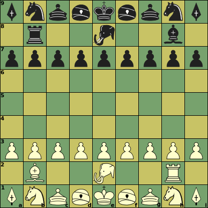

Sho Shogi (precurser of modern Japanese Chess)
Sho Shogi means 'small Shogi', and was one of the smaller variants of Japanese Chess, living in the shadow of its far more popular big brother, Chu Shogi ('middle Shogi'). Until people invented piece drops for the captured pieces. The small game was much more suitable for playing with piece drops, and a small adaptation (eliminating the Elephant) made it into the modern game. While Chu Shogi is in fact utterly unsuitable for playing with drops. And in the end, the drops won the day!
|  |
Initial setup
e1, e8: King
|
Moves at a Glance
Click on a piece below to see its moves

|

| ||||||||

|

| ||||||||

|

| ||||||||

|

| ||||||||

|

|

| |||||||
:
:
:
:
| Piece | ID | value | Moves (Betza notation) | Remarks |
| King | K | - | K | |
| Rook | R | 15 | R | Promotes to Dragon |
| Bishop | B | 13 | B | Promotes to Horse |
| Elephant | E | 11 | FsfW | Promotes to a second King |
| Gold | G | 9 | WfF | |
| Silver | S | 8 | FfW | promotes to Gold |
| Knight | N | 6 | fN | promotes to Gold |
| Lance | L | 5 | fN | promotes to Gold |
| Pawn | P | 1 | fW | promotes to Gold |
| Promoted pieces (not initially present) | ||||
| Dragon | D or +R | 18 | RF | |
| Horse | H or +B | 15.5 | BW | |
Pawn peculiarities
- Pawns move and capture straight ahead.
- It is forbidded to have more than one Pawn in the same file.
- It is forbidden to checkmate the opponent with a Pawn drop.
General rules
- The game is won by capturing the opponent's only King.
- Pieces promote at the end of a move into, in or out of the promotion zone.
- The promotion zone consists of the last three ranks.
- Perpetual checking is forbidden, and would be ruled a loss on the 4-fold repeat.
XBoard interface issues
Sho Shogi is not a standard variant in XBoard. It has to be played in XBoard by selecting regular Shogi after having set the holdings-size override in the New Variant dialog to 0, to disable piece drops. This is not all, however; the pieceToCharTable has to be changed to tell XBoard that the Elephant participates. This can unfortunately only be done through command-line options.
It is therefore best to put all options needed to massage XBoard into playing this variant in a settings file sho.xop. On install .xop files are associated with XBoard, so clicking them would start XBoard with the options in that file. You could then set everything in the file needed to start in Sho-Shogi mode:
-variant shogi -holdingsSize 0 -pieceToCharTable "PNBRLSE..G.+.++.++Kpnbrlse..g.+.++.++k"Since the game is just a subset of regular Shogi, legality testing can remain on. You could also specify your favorite Sho-Shogi engine with -fcp in that file.
Of course there will always be people that prefer an oriental look, with pentagonal kanji tiles. XBoard comes with a set of kanji pieces in the 'themes/shogi' sub-directory of its data directory (e.g. /usr/local/share/games/xboard). You can select that as -pieceImageDirectory (-pid for short) from the command line, or from the View -> Board dialog. You would also have to tick 'Flip black pieces Shogi style' there (or use the option -flipBlack true) to make sure the pieces won't go upside down when you flip the view.
Differences with FIDE
In stead of Queens you have Silver and Gold Generals, and Lances. The Knight only has the two forward-most moves of a FIDE Knight. Pawns capture straight ahead. There is no castling, Pawn double-push or e.p. capture. Other pieces than Pawns also promote. The promotion zone is three ranks deep in stead of one. You have an Elphant that can promote to a second King.
Strategy issues
Most pieces are quite slow, or not manoeuvrable at all, and their practical value is very dependent on how far they are from the Kings.